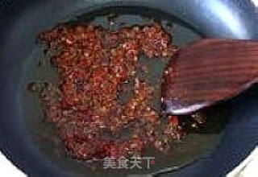

鱼香肉丝

“在国人的日常生活中，吃饭很自然是用碗的，无论大人还是小孩，无论家里还是饭店，美食与碗有着密不可分的关联。因为太过习以为常，碗和美食早已在人们的心里定格为一个整体。所谓相遇，就是在不可能中出现可能，在看似矛盾中找到共振，在对立中寻求同行。爱如生命，当食材得道脱胎换骨，当瓷器淬火修炼成魔，美食与美器，静待一个时刻... 值得一提的是，这种肉的制作法，先把肉片挂糊再烹制，可以保持肉质鲜嫩，易消化，整个过程中又没有经过长时间高温油炸，避免了致癌物质的产生，是一种比较科学的肉类烹制法。 没有象馆子里那种令人咋舌的一层厚厚的辣椒，却样样真材实料，本该有的“麻、辣、鲜、烫”一丝不减，除了被川人亲昵的喊做“海椒”的辣椒和郫县豆瓣，还用到花椒和葱姜蒜来调味，真正的川花椒一麻生百味，而姜更是辛辣开胃的原始调料，所以说，善用麻辣，并将麻辣由寻常用到极致，得麻辣调和众味之妙，唯川菜莫属。”
食材明细
鱼香肉丝的做法步骤
-
1准备食材。
-
2将猪肉、冬笋、胡萝卜、木耳切丝，蒜切末备用。
-
3将猪肉用水淀粉腌制十几分钟。
-
4水烧开后，将冬笋放入其中焯几分钟，然后盛出备用。
-
5取一只干净的小碗，然后依次放入适量的玉米淀粉、2勺糖、1小勺鸡精、2勺生抽、1小勺盐、4勺醋，再倒入半碗清水，调成碗汁备用。
-
6锅中加入适量的油，油热后，将肉丝放入锅中。煸炒至肉丝发白即可盛出备用。
-
7锅中留适量的底油，油热后，加入少许豆瓣酱、剁椒、蒜末炒出香味。
-
8加入高汤（或者清水），加入生抽，胡椒粉，鸡精等调料，略搅几下使之调匀
-
9将里脊肉一片一片地放入锅中煮开后1、2分钟就好了，将肉片和汤汁一起倒入铺好豆芽的大碗中。
-
10将剁碎烘干的干辣椒，花椒末撒在肉片表面，烧一点热油，放入适量辣椒面，小火炒香，浇在炸好的花椒，辣椒上，听见“嗞嗞”的声音，散出麻辣香味。开动吧！
小窍门
１、选择用里脊肉的原因是里脊肉比较辣。在切肉前可先放到冰箱冷冻一会，这样更容易切一些。
2、辣椒的量可根据自己的口味适当增加减少。
3、豆瓣酱有盐味。所以放盐一定要小心。
2、辣椒的量可根据自己的口味适当增加减少。
3、豆瓣酱有盐味。所以放盐一定要小心。